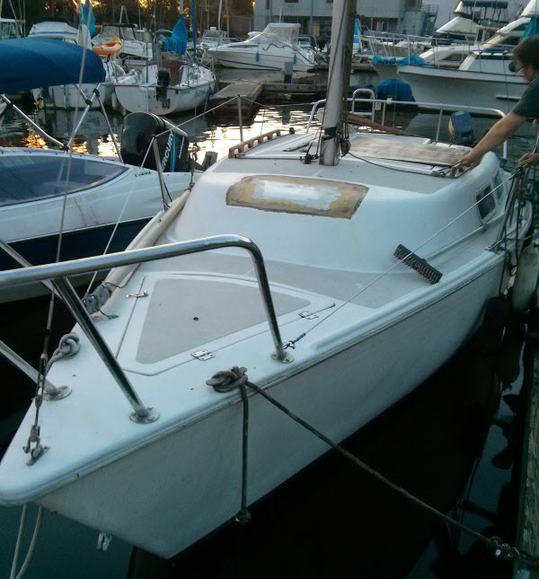

Beginnings
Our boat is a 22' Laguna. Not a common boat by any stretch, but it seemed water tight and to my untrained eye, appears to be a good place to start from. It had a little 8hp Yamaha outboard, 2 main sails, 2 jibs (one of which is brand new), and a spinnaker.
The boat hasn't been sailed in a while. It was in the process of being rebuilt when Jo acquired her. Jo was upfront about all her short comings. She had been sitting in the salt water, idle for about five years. Apparently, there was carpet on the roof below deck that left a hell of a mess. The motor hadn't been started in forever, and there was a lot of additional gear that we would need to buy, including life jackets, flairs, charts, fire extinguishers, navigation lights, etc. My plan at the time was to migrate some tools down there, and start rebuilding her! I hadn't thought past that part. None of us really knew anything about sailing...
| Hull Type: | Fin w/transom hung rudder | Rig Type: | Fractional Sloop |
| LOA: | 21.60' / 6.58m | LWL: | 19:00' / 19.14m |
| Beam: | 8.00' / 2.44m | Listed SA: | 206 ft² / 19.14m² |
| Draft (max.): | 2.92' / 0.89m | Ballast: | 900 lbs / 408 kgs |
| Disp: | 2285 lbs./ 1036 kgs. | Bal./Disp: | 39.38% |
| Construction: | Fiberglass | Disp./Len: | 148.72 |
| Designer: | Shad Turner | Builder: | Laguna Yachts (USA) |
| First Built: | 1983 | Last Built: | 1987 |